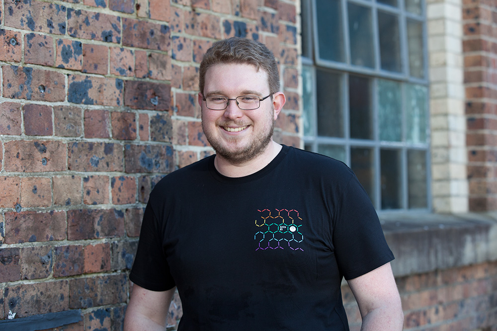

About me
Hi, I'm Alex. I'm a keen Haskeller,
currently working for Data61,
a part of CSIRO.
I'm the founding organiser of the Canberra Functional Programming Group,
CanFP, and have run the AusHac
Haskell hackathons in 2011
and 2012.
I currently work on the AREMI, the
Australia Renewable Energy Mapping Infrastructure, building backend
services in Haskell for geospatial data. The frontend for AREMI is
open source and based
on TerriaJS, an open source geospatial mapping
framework written at Data61. The services I've built will be made open source
soon!